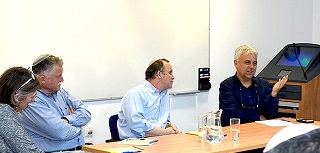

 מפגש לזכרו של פרופ' סימור פוקס 2016-04-07 לכבוד החנוכה החגיגית של בית הספר לחינוך באוניברסיטה העברית על שמו של פרופ' שלמה (סימור) פוקס, נערך בבית ספר מנדל למנהיגות חינוכית מפגש מיוחד לזכרו של פרופ' סימור פוקס, מייסד בית הספר קישור חיצוני: מפגש לזכרו של פרופ' סימור פוקס